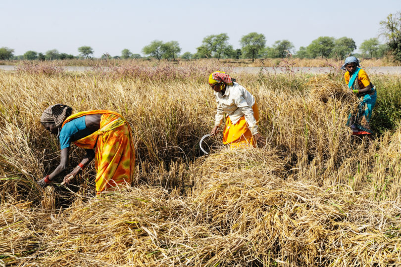
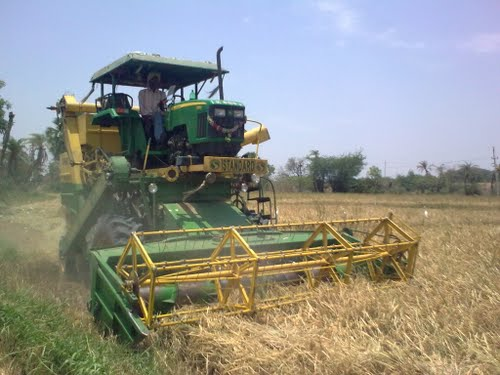
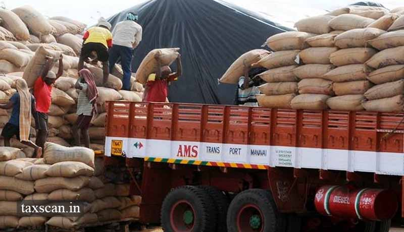
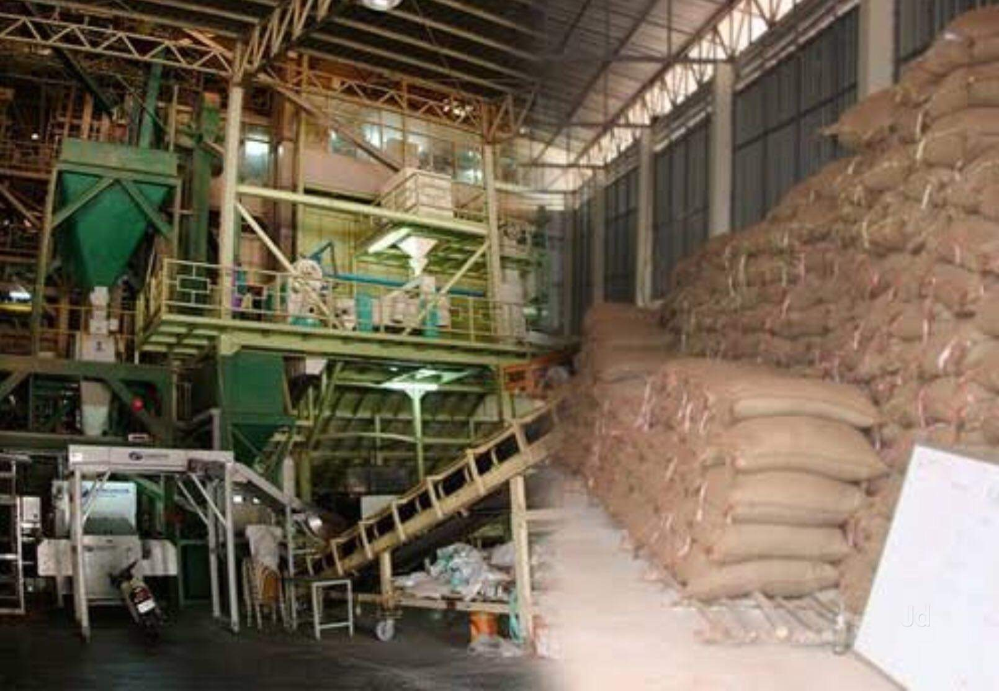
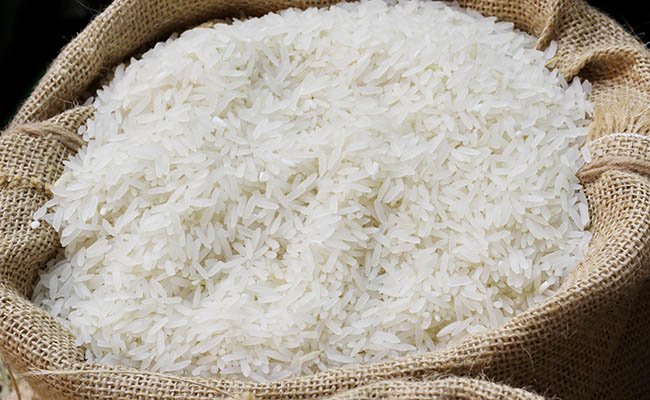

Basic stages of cultivation includes:
step7:Harvesting



Harvesting is the process of collecting the mature rice crop from the field. Depending on the variety, a rice crop usually reaches maturity at around 105–150 days after crop establishment. Harvesting activities include cutting, stacking, handling, threshing, cleaning, and hauling. Good harvesting methods help maximize grain yield and minimize grain damage and deterioration.
Harvesting can be done manually or mechanically:
Manual harvesting is common across Asia It involves cutting the rice crop with simple hand tools like sickles and knives. Manual harvesting is very effective when a crop has lodged or fallen over, however it is labor intensive. Manual harvesting requires 40 to 80 hours per hectare and it takes additional labor to manually collect and haul the harvested crop.
step5: milling



Milling is a crucial step in post-production of rice. The basic objective of a rice milling system is to remove the husk and the bran layers, and produce an edible, white rice kernel that is sufficiently milled and free of impurities.
Depending on the requirements of the customer, the rice should have a minimum number of broken kernels.
A rice milling system can be a simple one or two step process, or a multi stage process.
One step milling - husk and bran removal are done in one pass
Two step process - removing husk and removing bran are done separately
Multistage milling - can be done in the villageor local consumption or commercially for marketing rice; rice undergoes a number of different processing steps, such as: